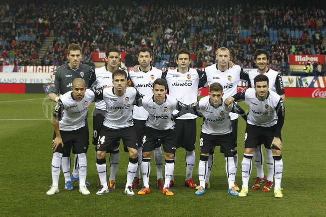

Datos

Total temporadas: 93 · Total partidos: 5145 · Total estadios: 451 · Total victorias: 2636 · Total empates: 1051 · Total derrotas: 1457 · Total jugadores: 944 · Total rivales: 559 · Total árbitros: 803 · Total goles: 8914 · De penalty: 575 · En propia meta: 121 · Total amarillas: 4320 · Total rojas: 423 · Total sustituciones: 6785